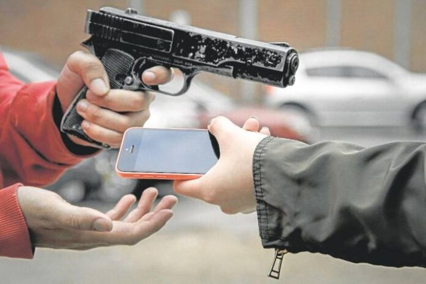
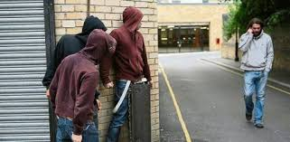
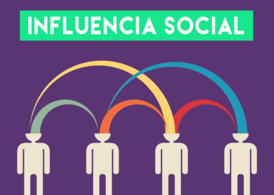
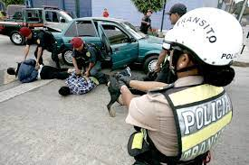
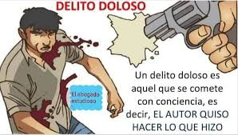
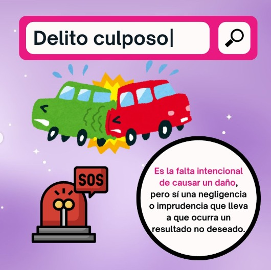
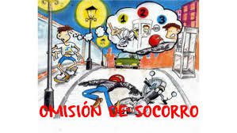
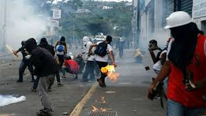
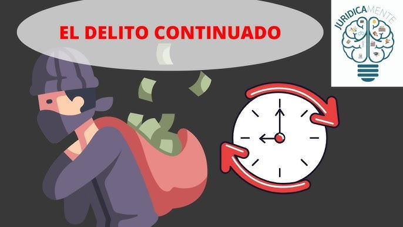
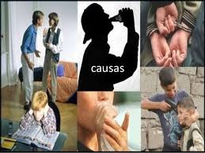

El delito constituye uno de los fenómenos sociales más complejos que enfrenta la humanidad. No se trata
únicamente de una acción contraria a la ley, sino de una conducta cargada de significados psicológicos y
sociales. Comprender al delincuente desde la perspectiva psicológica permite explicar los factores
internos (rasgos de personalidad, motivaciones, conflictos emocionales) y externos (contexto social,
económico, cultural) que influyen en su comportamiento.
2. Definición de Delito
Es una acción u omisión típica, antijurídica, culpable y punible. Representa una conducta humana que
afecta bienes jurídicos relevantes para la sociedad y merece sanción penal.

4. Enfoque Psicológico
Desde la psicología, el delito surge de aprendizajes desviados, conflictos emocionales, frustraciones
sociales o alteraciones de personalidad. Es también una forma de expresión de conflictos internos.
5. Aspectos Sociales del Delincuente
Pobreza y desigualdad → frustración y resentimiento.
Familia disfuncional → violencia y falta de normas.
Entorno marginal → drogas, pandillas, exclusión.
Estigmatización → rechazo y falta de oportunidades.

Contexto Familiar en el Apredizaje de la conducta delectiva
Interacción entre padres e hijos
Número de miembros de la familia
Matrimonios separados y disputas de pareja

7. Aspectos Psicológicos del Delincuente
Impulsividad y baja tolerancia a la frustración.
Rasgos antisociales o narcisistas.
Conflictos emocionales no resueltos.
Trastornos mentales y consumo de sustancias.

8. Psicología Criminal
No existe un único perfil del delincuente. Existen tipologías que combinan factores sociales, emocionales y
de personalidad.
Tipos de Delito
Doloso El autor busca o acepta el resultado
Culposo Sin intención, por imprudencia o negligencia
De Resultado Necesita un efecto material (ej. homicidio)
De Actividad Basta con ejecutar la acción prohibida
De Omisión No actuar cuando existe deber legal
10. Delito Doloso
El sujeto actúa con intención de causar el daño o acepta el resultado. Psicológicamente muestra cálculo,
frialdad y planificación.

11. Delito Culposo
Ocurre sin intención, pero por negligencia, imprudencia o falta de cuidado. Refleja descuido, exceso de
confianza y falta de autocontrol.

12. Delito de Resultado
Necesita que ocurra un efecto material (ejemplo: homicidio). El delincuente se enfoca en su objetivo sin
medir las consecuencias sobre otros.
13. Delito de Actividad
Basta con ejecutar la acción (ejemplo: portar armas ilegales). Asociado a impulsividad y necesidad de
reafirmar poder.
14. Delito de Omisión
Se produce al no actuar cuando existe un deber legal (ejemplo: omisión de auxilio). Refleja desapego social y
falta de empatía.

Clasificación de los Delitos
Delitos Comunes
Afectan a la colectividad en general (ej. homicidio, robo, hurto)
Delitos Políticos
Atentan contra la seguridad del Estado (ej. terrorismo, rebelión)
Delitos según su momento de consumación
Delitos según la clase de acción penal
16. Delitos Comunes
Cometidos por cualquier persona contra bienes individales, ejemplo: Robo, Homicidio, Estafa.
17. Delitos Políticos
Atentan contra la seguridad del Estado (terrorismo, rebelión). Se basan en motivaciones ideológicas,
fanatismo y liderazgo.

18. Delitos Instantáneos
Se consuman en un solo acto (ejemplo: hurto). Perfil: impulsivo y oportunista.
19. Delitos Permanentes
Permanente: el estado ilícito se prolonga (ejemplo: secuestro). Perfil frío y calculador.
19. Delitos Continuados
Continuado: repetición de actos ilícitos (ejemplo: estafa). Perfil persistente y obsesivo.

Clase de Acción Penal
Pública
El Estado persigue de oficio (ej. homicidio, secuestro).
Privada
Depende de la denuncia de la víctima (ej. injuria, calumnia).
Mixta
Requiere denuncia inicial de la víctima y luego continúa el Estado (ej. delitos
sexuales).
21. Conclusiones
La delincuencia no puede entenderse únicamente desde una perspectiva individual, sino también desde las condiciones sociales.
La psicología del delincuente concluye que el delito es una conducta compleja influida por múltiples factores, que puede ser comprendida, prevenida y en muchos casos tratada, siempre que exista un trabajo integral entre individuo y sociedad.

22. Recomendaciones
Promoción de la salud mental.
Detección temprana de factores de riesgo.
Fortalecer el núcleo familiar, mejorar el acceso a la educación